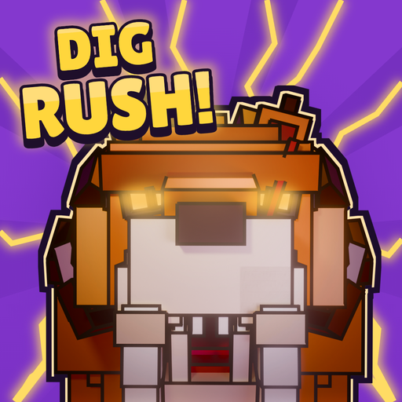

A Roblox game by Xiloixa Studios. Dig up fossils with your shovel, revive them in the Lab as prehistoric beasts, and chase the dig rush, the Colossus and the rarest finds.
This site holds the game's Privacy Policy and Terms of Service, and the sign-in page used by the studio's own TikTok posting tool.